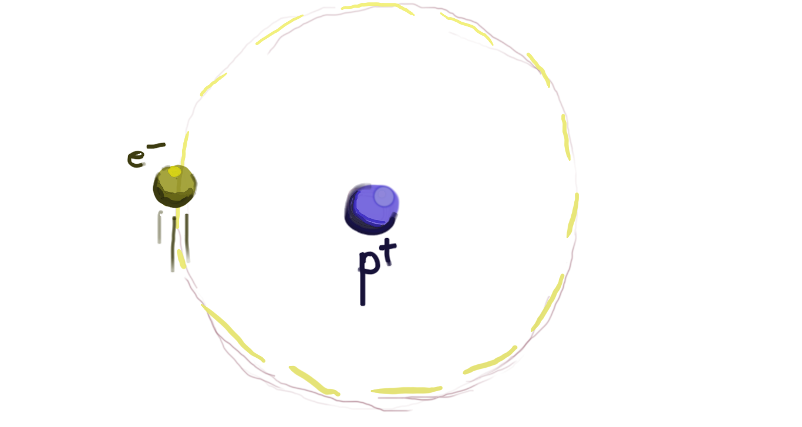
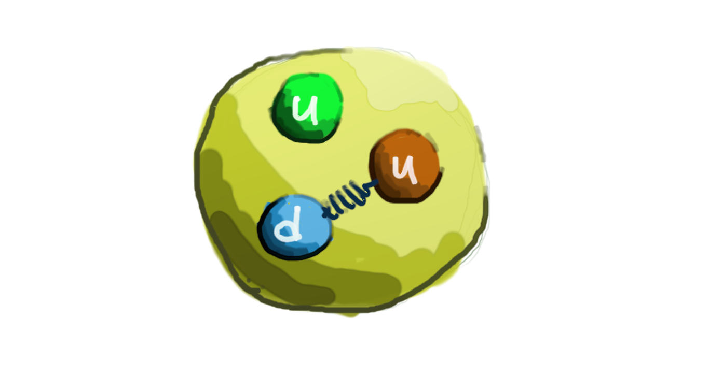

Atoms actually consist of protons, neutrons and electrons, and can be torn apart by raising the temperature of the atom so high that the forces are not strong enough to hold them together. Once we break apart the atom, what happens? How do these smaller particles interact? We can understand the atom at follows:
A Hydrogen Atom, the simplest possible atom, is made of one proton and one electron. The proton, which is much heavier than the electron (in fact about 2000 times heavier) sits in the center, with the electron orbiting around the proton. The electron is negatively charged[ref], while the proton is positively charged[ref], so they are attracted to each other. The electron stays in orbit around the proton, just like the Earth stays in orbit around the Sun.
Are these particles the smallest particles, or can we split them, just like we split the atom?
We believe the electron is indeed fundamental. After trying to split it apart in many different ways, physicists have concluded that it is probably not possible, meaning that electrons are not made of anything smaller.
However, we know that the proton is made up of other smaller particles, which we call quarks. The proton is made up of two kinds of quarks, called "up" and "down". [We can imagine]?? the proton is made up of three quarks: two up quarks and one down quark.
This simple model can be expanded to describe more complicated atoms. For example, the Helium atom consists of two protons and two neutrons in the center, forming the nucleus [ref], with two electrons orbiting them. The proton, made of quarks is very similar to the neutron, while the electron is indivisible. With a similar mass[ref], they have very similar properties[ref], apart from their different electric charge [ref] (the proton is positively charged[ref], the neutron is neutral and has no electric charge[ref]). This is because they are also made up of quarks, just in a different combination. While the proton has two up quarks and one down quark, the neutron consists of one up quark and two down quarks.

How can it be that the proton and neutron have a different charge, if they are made of the same building blocks?
We know that the proton is up, up, down and charged +1 and the neutron is up, down, down and charged 0. The only possible way of resolving this is that the up quark is charged +2/3 and the down quark is charged -1/3. The fractions only appear here because we discovered the electron before we discovered the quarks, and called the electron charge "-1". If we had called the charge of the electron "-3", the quark charges would be whole numbers.
What are charges? Why do we call them "+" and "-"? What holds together the Hydrogen atom? And what holds together the nucleus? What about radioactivity? Why do physicists always draw funny graphs when explaining this? And finally, what is this "Higgs boson" everyone is talking about? Continue to answer these questions.